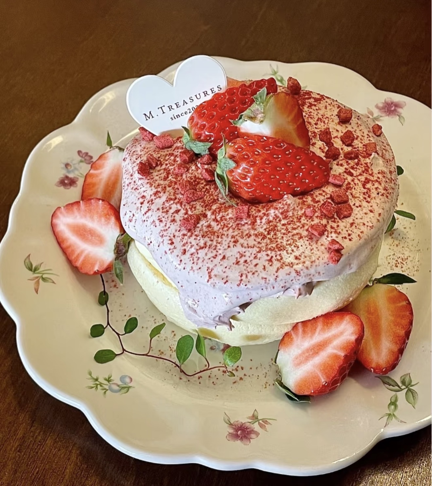

Soufflé
舒芙蕾 — Light, airy, and fluffy dessert with a delicate texture.
Ingredients
- Eggs (3)
- Milk
- Sugar
- Flour
- Cornstarch
- Butter
- Vanilla extract
Directions
- Separate egg whites and yolks.
- Mix yolks with milk, flour, and sugar.
- Beat egg whites until stiff peaks form.
- Gently fold whites into the batter.
- Pour into pan or molds.
- Cook on low heat or bake until puffed.
- Serve immediately while warm.